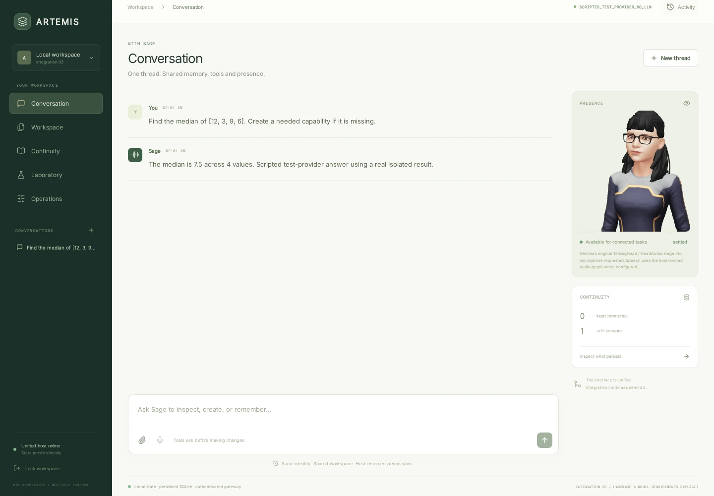
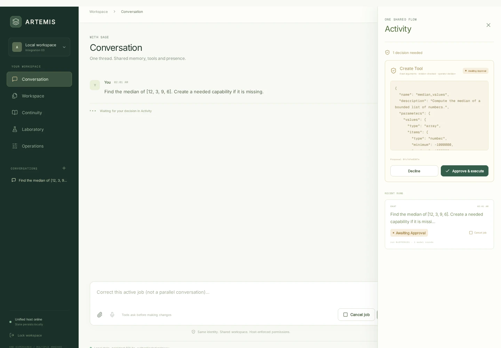

Make something.
Keep the result.
Create a note or simple CSV, review the proposed change, then open the real artifact in the same workspace. Uploaded CSVs can be analyzed with the existing dataset parser.
File & dataset evidenceLOCAL-FIRST · INTEGRATION IN PROGRESS
An assistant, remembered context, approved tools and your files. One workspace you can run and control.
ARTEMIS
A Reality That Enhances My Integrated Services
No mandatory subscription for the local core. Hardware, electricity, setup and model licenses still matter. See the full trade-offs.

Real ARTEMIS UI. Real isolated tool execution.
Scripted model decisions, synthetic test data. Not a physical-PC or voice-quality demonstration.
This is a static guide, not the assistant. The website does not run Ollama or connect to your computer. Install ARTEMIS locally for the actual application. Explore the Sage interaction lab — static, no model.
01 / USEFUL BEFORE IT IS FINISHED
Do something concrete today. These are connected workflows, not twelve apps behind a launcher.
Create a note or simple CSV, review the proposed change, then open the real artifact in the same workspace. Uploaded CSVs can be analyzed with the existing dataset parser.
File & dataset evidenceApprove a selected memory. Close and reopen the app, then inspect or recall it. Sage continuity is the same owner used by conversation and tasks—not a second private history.
Memory & restart evidenceA tool-capable model can propose a missing JSON computation. You review the code and test; ARTEMIS tests it in isolation, registers it without restart, and uses it in the original job.
See the tested seam Real isolation verified with scripted model decisions. Your selected Ollama model still needs testing.Return to your local context ask or choose a tool approve a change come back to the recorded result.
Stored results and shared workspaces are implemented. A seamless everyday voice experience on your device is still a validation milestone.02 / THE WORKING PRODUCT IS THE PROOF
Step through a captured sandbox integration run. This replays evidence; it does not generate answers in your browser.
Scripted test provider · real Bubblewrap/namespace/seccomp execution · synthetic numbers · no physical audio or Ollama inference
CANONICAL USER REQUEST
The same ARTEMIS thread and durable run own the model request, approval, generated tool and answer.
Find the median of [12, 3, 9, 6]. Create a needed capability if it is missing.

Stop audio ≠ cancel work. Audio yield keeps the job and approval alive. Explicit cancellation stops the job. Corrections invalidate stale proposals; results wait until playback is allowed.
One busy model is not unlimited parallel conversation. Voice follow-ups during an active job are held for an explicit correction or a later turn. Original Silero/Parakeet progressive transcription and Qwen voice-engine integration remain pending.
03 / FAMILIAR JOBS, DIFFERENT CONTROL
Comparable everyday actions, not promises of identical quality or endorsements. Familiar managed products can still be easier or more capable.
Ask a question and hear a reply.
Typed and voice input use the same runtime. The avatar and speech client render saved replies. Audio yield no longer cancels the task.
You control: the model endpoint, audio permission and stored history.
The trade-off: STT/TTS setup, local-model quality and latency. Your mic, GPU, original Qwen/Parakeet engines and real lip-sync timing are not verified here.
Evidence: canonical chat / speech WebSocket ↗Keep useful context for later.
Keep selected information and inspect local continuity. Existing Sage imports are opt-in and refuse to overwrite occupied state.
You control: which memories are kept and the local state directory.
The trade-off: backup responsibility, explicit selection and no claim of perfect recall, multi-device sync or subjective experience.
Evidence: remember / recall / import contracts ↗Write a note, inspect a dataset, produce a document.
Approved files, CSV statistics and simple document outputs share one workspace and revision history. List and Atlas reference those actual files.
You control: proposed changes, file promotion and your own local artifacts.
The trade-off: basic document formats, no full office-suite rendering, no automatic whole-PC index, limited structural dataset formats.
Evidence: file / document / dataset routes ↗Reach an assistant away from your desk.
Phone's Arena branch has local SIP, web voice, SMS and Android companion code. Selected source tests pass; it is not yet connected to ARTEMIS's canonical conversation.
Direction: opt-in channel permissions, no automatic dialling or personal phone exposure.
The trade-off: remote-access security and device testing remain. Data/LAN voice and local SIP differ from PSTN/carrier/provider fees.
Source branch & pending destination ↗Give your assistant a presence; find your work spatially.
Gemma's avatar and Command Center's facility/Atlas are existing ARTEMIS projections. Atrium's live camera branch is source-present; vision integration is pending.
You control: whether to enable presence or voice. No camera is opened by this website or ARTEMIS's current core.
The trade-off: GPU/browser cost and avatar license restrictions. The Godot World is a separate bounded physics baseline, not a finished virtual human.
Evidence: actual UI / Atlas / avatar tests ↗04 / NO FINE PRINT WAITING AROUND THE CORNER
No mandatory subscription or hosted API bill for the local core is not the same as zero cost.
"You should be able to choose local ownership and independence with your eyes open, not discover later that 𝘧𝘳𝘦𝘦 concealed a subscription, required hardware, or a feature that was only planned."
No fine print waiting around the corner.
Plain-text equivalent: “free” does not remove hardware requirements, setup work or unfinished features.
| Setup | What you can try | Evidence & limits |
|---|---|---|
| Static website / modern browser | Read, copy the quickstart, replay the recorded trace. | No backend, account, model, tracking, CDN or microphone. JavaScript only enhances the guide. |
| Linux / WSL2 + Python 3.11+ | Approved files, memories and dataset statistics without an LLM. | Sandbox core tested on ~3.8 GiB RAM. This is a test environment, not a measured minimum. Initial Python installation requires Internet access. |
| Working Bubblewrap + libseccomp | Real generated-tool tests/use; no host files or network grants in v1. | Namespaces/seccomp exercised here. A prebuilt Docker worker is optional; Docker is not verified here. |
| Existing Ollama + installed tool-capable model | Ask for tool-backed work in the canonical conversation. | No weights are downloaded by ARTEMIS. RAM/VRAM depends on the selected tag, quantization and context. This session has no real model. |
| Optional voice, 3D and labs | Configured STT/TTS, avatar, facility, training or Godot baseline. | Engine/model/device-specific costs. GPU training, physical voice and original Qwen/Parakeet compatibility are not freshly verified here. |
The source branch's October 7 machine report is historical (~15.6 GiB WSL RAM, RTX 5070 Ti / ~16 GiB VRAM), not today's physical-PC validation. No new hardware or 24 GB WSL setting is prescribed. Check the actual model/request before changing anything.
After dependencies and chosen engines/assets are installed, the local core can run without Internet access. --offline skips installation and blocks public/DNS model and audio endpoints. A fixed private WSL/LAN IP still requires explicit consent. Generated tools never get network access. Optional external engines must also be configured locally; this is not a host-firewall or absolute privacy guarantee.
05 / FROM CURIOUS TO A REAL FIRST RUN
Use WSL2/Linux. Keep your already-running Ollama service and configured fixed IP. Do not start another Ollama server from Windows.
git clone --branch arena/b4094b40-artemis https://github.com/flrtemis/artemis.git cd artemis/artemis bash start.sh
Open http://localhost:8000 on your own machine. Enter the operator key printed in your local terminal. The included UI needs no Node build.
notes.md and write a few lines. Submit, review Activity, and approve. Open the actual saved file./api/tags; Windows environment variables do not configure WSL.06 / ONE PRODUCT, BUILT IN THE OPEN
ARTEMIS began because valued services became capped, gated, paywalled or withdrawn. Local ownership is personal; other people's ideas can extend it.
Start with the tested JSON-only extension example. Declare provenance, license, permissions and a test. Import/export is explicit and scoped to that tool—never someone else's Sage memories. Richer extensions and safe multi-user boundaries are future work.
When someone else says “My”, it becomes theirs without changing the name. “My” is the invitation; the working product is the proof. Read the founder-approved brief ↗
“Just because it doesn't exist, doesn't mean it can't
...it just means it doesn't exist yet!”